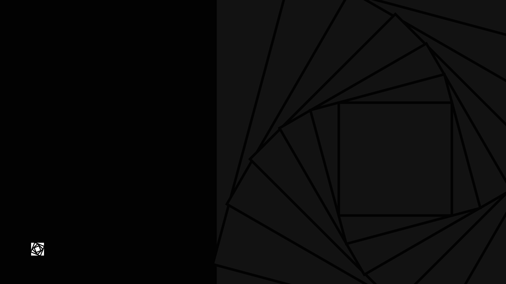

Technical direction
Help decide what to build, what to simplify, and what to avoid before a roadmap becomes costly.
Software engineering consultancy
White Rose reviews software systems, plans technical work, clarifies engineering decisions, and delivers hands-on development with DevSecOps. The focus is practical engineering support for teams that need clear direction, safer delivery, and maintainable software without unnecessary process.
The work is simple: understand the system, explain the tradeoffs, and help with the implementation when needed. That can mean a short architecture review, a focused delivery plan, a security-minded deployment path, or direct development alongside your team.
Help decide what to build, what to simplify, and what to avoid before a roadmap becomes costly.
Review systems, codebases, and infrastructure to find reliability risks, security gaps, bottlenecks, and unnecessary complexity.
Build features, integrations, backend services, and internal tooling with maintainability, observability, deployment, and handover in mind.
Support deployment, infrastructure, automation, reliability, and security workflows so releases are easier to repeat, inspect, and recover from.
contextowl.co is a product owned by White Rose.
finnfisk.no is a sport fishing guide for Innlandet, owned by White Rose.
cliamp.stream is a terminal music player inspired by Winamp, owned by White Rose.
Flux connects an Omarchy computer to a phone for files, clipboard, notifications, and media. It is owned by White Rose.
Detent is an Android home screen that you turn, owned by White Rose. Apps sit on a dial at the edge of the screen.
Recommendations should be easy to understand and act on.
Advice should avoid unnecessary complexity.
Technical choices should match the actual constraints.
Work starts with the actual system, constraints, risks, and tradeoffs before recommending a direction.
Advice can continue into hands-on development, automation, deployment, reliability, and security work.
Review public engineering work on GitHub or read more at oever.li.
Bjarne works with software engineering, infrastructure, DevSecOps, and practical technical direction. Projects often combine architecture review, hands-on programming, platform automation, and advisory support for teams that need an experienced engineer to move critical software work forward. View GitHub or read more at oever.li.
Transparent SVG for dark backgrounds, press, partner pages, and external references.
Download SVGTransparent SVG for light backgrounds and monochrome external use.
Download SVG
Vantablack wallpaper with the White Rose mark, sized for desktop backgrounds.
Download PNG